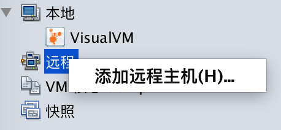

本文介绍利用VisualVm和jstatd来远程监控Java进程的方法。
要实现远程监控Java进程，必须在远程主机（运行Java程序的主机）上跑一个jstatd进程，这个进程相当于一个agent，用来收集远程主机上的JVM运行情况，然后用VisualVm连接到这个jstatd，从而实现远程监控的目的。
第一步：在远程主机上启动jstatd
要注意的是，jstatd是一个RMI server application，因此在启动时支持java.rmi properties。
根据jstatd文档，我们需要在启动jstatd时提供一个security policy文件：
grant codebase "file:${java.home}/../lib/tools.jar" {
permission java.security.AllPermission;
};然后运行下面命令启动：
jstatd -J-Djava.security.policy=jstatd.all.policy不过这里有一个陷阱，见SO上的这个提问：VisualVm connect to remote jstatd not showing applications。在启动时还得指定rmi server hostname，否则VisualVm无法看到远程主机上的Java进程。所以正确的命令应该是这样：
jstatd -J-Djava.security.policy=jstatd.all.policy -J-Djava.rmi.server.hostname=<host or ip>远程主机的hostname可以随便填，只要VisualVm能够ping通这个hostname就行了。所以说下面这几种情况都是可行的：
- 远程主机没有DNS name，但VisualVm所在主机的
/etc/hosts里配置了some-name <ip-to-remote-host>。jstatd启动时指定-J-Djava.rmi.server.hostname=some-name，VisualVm连接some-name。 - 远程主机经过层层NAT，它的内部ip比如是
192.168.xxx.xxx，它的对外的NAT地址是172.100.xxx.xxx。jstatd启动时指定-J-Djava.rmi.server.hostname=172.100.xxx.xxx，VisualVm连接172.100.xxx.xxx。 - 上面两种方式混合，即在VisualVm所在主机的
/etc/hosts里配置some-name <ip-to-remote-host-nat-address>。jstatd启动时指定-J-Djava.rmi.server.hostname=some-name，VisualVm连接some-name。
还有要注意一点，运行jstatd的用户必须和运行Java程序的用户相同，或者是root，否则会监控不到远程主机上的Java进程。
第二步：启动VisualVm
在你的机器上运行jvisualvm启动VisualVm。按照下面步骤添加远程主机：
第一步

第二步

第三步

你就能看到远程主机上的Java进程了。
需要注意的是如果你点开一个远程进程，那么你会发现有些信息是没有的，比如：CPU、线程、和MBeans。这是正常的，如果需要这些信息（就像监控本地Java进程一样），那么就需要用JMX，相关内容会在另一篇文章中讲解。